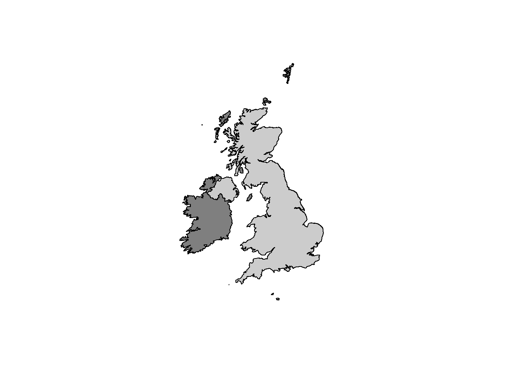

2 Methods
2.1 Study Area
Marine habitat sensitivity maps were generated for the United Kingdom’s Exclusive Economic Zone (EEZ), from the shoreline to 200 NM offshore [Figure 1]!(english_waters). The sensitivity maps were generated in two steps, first for 0 - 12 NM offshore for English territorial waters, and second, comprising both the 12 - 200 NM English offshore and 0 - 200 NM for devolved administrations. The habitat sensitivity maps were therefore generated independently for these adjacent geographical areas.
The areas were treated independently as Natural England holds fine-scale data on the composition of the benthic habitat in 0 - 12 NM in England which was not available for the offshore (12 - 200 NM) English waters and 0 - 200 NM for Devolved Administrations at the time of writing. The fine-scale information on habitat composition was utilised in an additional step within the R modelling routines, which allowed biotope prediction within mapped broader scale habitats. The biotope level habitat information was obtained from additional data and expert validation which describes the likely biotopes within subbiogeographic regions within English waters insert a map of subbiogeogrpahic regions. (This fine-scale habitat information when NE provides statutory advice, and is therefore well established within the organisations day to day working.)
 TO DO replace with maps from QGIS? or add the eez?: Figure 1. Insert a map of the UK coastline and 200 NM Exclusive Economic Zone (EEZ) Or Map of 0 - 12NM and a second map of develoved admin
2.1.1 Data sources
Two main data sets were used to map the sensitivities for the marine benthic habitats within the UK’s EEZ, including 1) habitat sensitivity assessments, and 2) a marine habitat map for the UK. The two data sources share a common unique identifier which refers to the habitat category and could therefore be joined to associate the sensitivity of habitat categories to the mapped habitat categories.
2.1.1.1 1. Marine habitat map
The benthic habitat map used by NE (Marine_Evidence_Base_Internal.gdb, layer = BSH), was used as the basis to inform the spatial distribution of benthic habitats around within the UK’s EEZ for this project. The habitat categories contained within NE’s habitat map are based on the European Nature Information System (EUNIS) classification developed in conjunction with the JNCC (???; ???). TO DO: Get detail from Ian/Tim on the habitat map - is there a NE document to reference?
2.1.1.1.1 The EUNIS habitat classification system
The EUNIS benthic habitat categories is a hierarchical system within which fine-scale habitat categories are nested within broader scale habitat categories, referred to as EUNIS levels. At the top of the hierarchical classification system, the broadest definition of habitat corresponds, e.g. “Marine”, to EUNIS level 1. At higher EUNIS values, the amount of thematic detail about the habitat increases progressively, for example, EUNIS level 2: A1 : Littoral rock and other hard substrata, EUNIS level 3: A1.1 : High energy littoral rock, EUNIS level 4: A1.11 : Mussel and/or barnacle communities, EUNIS level 5: A1.113 : Semibalanus balanoides on exposed to moderately exposed or vertical sheltered eulittoral rock, EUNIS level 6: A1.1132 : Semibalanus balanoides, Fucus vesiculosus and red seaweeds on exposed to moderately exposed eulittoral rock.
See the EUNIS-webpage for more examples on the hierarchical view of the EUNIS habitat classification system.
The habitat map was comprised habitat categories which were of different EUNIS levels (2 - 6). The differences in the habitat categories (EUNIS levels) is a result of different amounts of data available for the different areas across the EEZ. The development of the habitat is an ongoing process which updates the habitat maps and habitat classification system as new information becomes available. As such, there is variability in the amount of detail about the habitat (substrate and benthos), as well as variability in confidence between the mapped areas (referred to as polygons hereafter). The habitat map is therefore comprised of a patchwork of polygons which may differ in their shape, area and the habitat category (and EUNIS level) which they represent, as well as the level of confidence with which the habitat was category was assigned to it. The confidence associated with habitat classification of each polygon is represented by a MESH (Mapping European Seabed Habitats) score (Annex MESH confidence). MESH scores are derived from the confidence associated with different data sources used to inform the classification of the habitat category assigned to a polygon. The data sources used to generate the benthic habitat map are based on a variety of methods and data sources, such as remote sensing, side-scan sonar, sediment grabs and SCUBA-diver surveys.
The EUNIS benthic habitat categories which appear on the habitat map were associated with habitat categories contained within the sensitivity assessment database, which were used together to derive sensitivity maps for benthic habitat.
2.1.1.2 2. Sensitivity assessments
Sensitivity assessments of each benthic habitat categories has been carried out for most EUNIS habitats, and are publicly available on The Marine Life Information Network’s (MarLIN) website.The sensitivity assessments are based upon the MarESA (H. Tillin and Tyler-Walters 2014) methods in which the EUNIS habitats were assessed against 39 standardised pressures for each activity (Annex Activities and Pressures). The ten fishing activities in the AoO database were included in this project (Table 1). The pressures are standardised according to benchmarks, for which the benchmark value is defined at which point an effect is expected (H. Tillin and Tyler-Walters 2014). The 39 pressures include the 36 OSPAR standardised pressures and an additional three which allow specifying direction of a pressure rather than simply stating a change (Table 2). For example instead of one pressure stating a change of 0.5° C, two separate pressures are included stating an increase of 0.5° C and another a decrease of 0.5° C. For details about the benchmarks please see Tillin et al (2014). One of six levels of sensitivity are assigned to each habitat category in relation to the each of the 39 pressures (Table 3).
| ActivityName | Description |
|---|---|
| Anchored nets/lines | Sub-activity includes gill nets, trammel nets & tangle nets, and long lines, that are fixed/anchored to, or come into contact with, the seabed. Also includes handlines and rod & line angling (where anchoring of the vessel occurs). |
| Electrofishing | Sub-activity that includes trawls that interact with the seabed and use electric fields to fish for shellfish e.g. razor shells, shrimp or fish e.g. plaice, sole. |
| Traps | Sub-activity includes pots, creels & traps, as well as fyke nets and other similar gear. |
| Pelagic fishing (or fishing activities that do not interact with sea bed) | Sub-activity includes gears that do not interact with the seabed e.g. pelagic/mid water trawls, drift nets, pelagic seines and pelagic long lines. Also includes handlines and rod & line angling (vessel-based) (where no anchoring occurs). |
| Hydraulic dredges | Sub-activity includes hydraulic/suction dredging e.g. clams, cockles, razor shells. |
| Dredges | Sub-activity includes dredging (non-hydraulic) for shellfish e.g. scallops, oysters, mussels (including seed), clams & cockles. Includes dredges towed by vessels and tractors. |
| Demersal trawl | Sub-activity includes beam trawls, demersal otter trawls, demersal pair trawls (excludes electronic pulse fishing). |
| Demersal seines | Sub-activity includes demersal anchor/Danish seines and Scottish seines, as well as beach seines that come into contact with the seabed. |
| Shore-based activities | Sub-activity includes crab tiling, bait digging, shellfish collection (including seed mussel) e.g. by hand (with or without digging apparatus), rake or through the use of ‘tiles’. Also includes rod & line angling. The setting of pots and nets from the shore is also included. Vehicles or vessels may be used to access the shoreline. |
| Diving | Collection of target species by divers, snorkelers. Includes recreational diving. |
| PressureCode | PressureName |
|---|---|
| B1 | Visual disturbance |
| B2 | Genetic modification & translocation of indigenous species |
| B3 | Introduction or spread of invasive non-indigenous species (INIS) |
| B4 | Introduction of microbial pathogens |
| B5 | Removal of target species |
| B6 | Removal of non-target species |
| D1 | Habitat structure changes - removal of substratum (extraction) |
| D2 | Penetration and/or disturbance of the substratum below the surface of the seabed, including abrasion |
| D3 | Changes in suspended solids (water clarity) |
| D4 | Smothering and siltation rate changes (Heavy) |
| D5 | Smothering and siltation rate changes (Light) |
| D6 | Abrasion/disturbance of the substrate on the surface of the seabed |
| H1d | Temperature decrease |
| H1i | Temperature increase |
| H2d | Salinity decrease |
| H2i | Salinity increase |
| H3 | Water flow (tidal current) changes, including sediment transport considerations |
| H4 | Emergence regime changes, including tidal level change considerations |
| H5 | Wave exposure changes |
| L1 | Physical loss (to land or freshwater habitat) |
| L2sb | Physical change (to another seabed type) |
| L2sed | Physical change (to another sediment type) |
| O1 | Litter |
| O2 | Electromagnetic changes |
| O3 | Underwater noise changes |
| O4 | Introduction of light |
| O5 | Barrier to species movement |
| O6a | Collision ABOVE water with static or moving objects not naturally found in the marine environment (e.g., boats, machinery, and structures) |
| O6b | Collision BELOW water with static or moving objects not naturally found in the marine environment |
| O7 | Above water noise |
| O8 | Vibration |
| P1 | Transition elements & organo-metal (e.g. TBT) contamination |
| P2 | Hydrocarbon & PAH contamination |
| P3 | Synthetic compound contamination (incl. pesticides, antifoulants, pharmaceuticals) |
| P4 | Introduction of other substances (solid, liquid or gas) |
| P5 | Radionuclide contamination |
| P6 | Nutrient enrichment |
| P7 | Organic enrichment |
| P8 | Deoxygenation |
| Rank | Sensivity_description |
|---|---|
| 1 | Not sensitive |
| 2 | Insufficient evidence |
| 3 | Not assessed |
| 4 | Low |
| 5 | Medium |
| 6 | High |
2.1.1.2.1 2.1 Sensitvity assessments database
The sensitivity data is also stored internally at Natural England in a Microsoft Access database, namely, PD_AoO.accdb. the sensitivity assessments are used to inform NE’s Advice on Operations (AoO), available as conservation advice packages to the public on the Designated Sites View. The Microsoft Access database, PD_AoO.accdb, was used to obtain sensitivity assessments for the EUNIS habitats in this project.